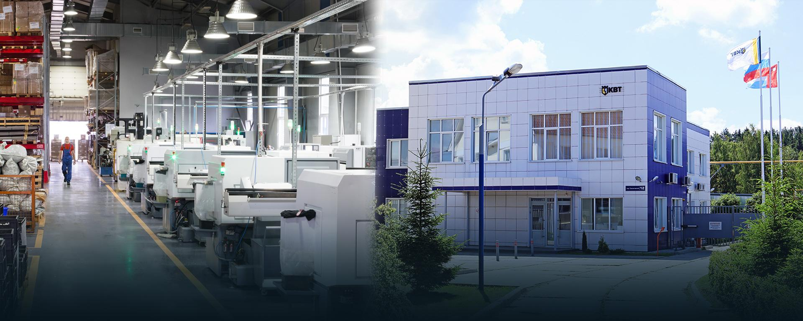

История производства
Прежде, чем стать успешным российским «игроком» на рынке электротехнического оборудования, завод «КВТ» проделал долгий и непростой путь развития. Секрет успеха - это настойчивое стремление к цели 
- 6 августа 2020 года завод «КВТ» вступил в союз «Торгово-промышленнй палаты Калужской области»
- Руководящий состав завода «КВТ» посетил практическую конференцию «Бережливое производство и производительность труда», основным спикером которой был доктор бизнес администрирования, эксперт по бережливому производству и развитию производственных систем - Литти Сергей Павлович
- Завод «КВТ» представил свою продукцию на 30-й международной выставке отделочных и строительных материалов, инженерного оборудования, архитектурных проектов «YugBuild»
- В рамках программы автоматизации на заводе запущена в работу высокопроизводительная линия непрерывного вакуумного расширения термоусаживаемых трубок с нагревом заготовок горячим воздухом
- Запущены в эксплуатацию многоместные автоматические установки расширения термоусаживаемых перчаток, что позволило внедрить на участке расширения принцип многостаночного обслуживания
- Парк станочного оборудования завода «КВТ» пополнился фрезерными четырёхосевыми обрабатывающими центрами для производства болтовых наконечников и соединителей
- Для производства дюбель-хомутов ДХ, ДХП, выпускаемых под торговой маркой «Fortisflex», были закуплены дополнительные термопласт-автоматы, оснащённые энергосберегающими сервоприводами
- Активное продвижение завода в основных социальных сетях и на блогерских Internet-платформах: Facebook; vk.com; Instagram; TikTok ; Яндекс Дзен; Telegram
- Учебный центр «КВТ» запустил новый видео-формат консультаций - «вопрос-ответ», на Instagram-канале toolhunter_rus
- Группа термоусаживаемых муфт не распространяющих горение пополнилась двумя рядами изделий в исполнении «нг-LS»: концевыми мини-муфтами ПКТп мини нг-LS на кабели с пластмассовой изоляцией сечением от 2,5мм² до 10мм² и концевыми муфтами для контрольных кабелей - ККТнг-LS
- Ряд ножниц секторных расширен новыми моделями НСТ-32 и НСТ-38 серии «ПРОФИ» с твёрдосплавными лезвиями
- Новая модель инструмента КСП-70 серии «ПРОФИ» для снятия полупроводящего экрана на кабелях с изоляцией из сшитого полиэтилена диаметром до 70мм
- Новая серия гидравлического инструмента – гидравлические съёмники со встроенным насосом - типа СГА и съёмники СГ, требующие подключения отдельного насоса
- Ассортимент слесарно-монтажного инструмента пополнился новой группой – заклёпочниками ручными типа ЗР
- Электромонтажный инструмент «КВТ» пополнился моделью ножниц НКК-110 для резки кабель-каналов и пластиковых коробов высотой до 50 мм
- Представлена улучшенная линейка поясных сумок с системой быстрой фиксации на поясе монтажника – «QUICK-LOCK»
- Усовершенствована функция резки проводов автоматических многофункциональных стрипперов WS серии «ПРОФИ». В конструкцию добавлен модуль резки СutPro со сменными лезвиями
- Ассортимент металлорукава торговой марки «FortisFlex» пополнился новыми рядами изделий: МРПИнг NORD и Р3 ЦХ с протяжкой, а также специальной усиленной серией МГ-ПУнг-LS «TITAN»
- Серия медных кабельных наконечников ТМЛс стандарта «КВТ» пополнилась изделиями для оконцевания кабельных жил сечений 300мм² и 400мм²
- Запущена линейка алюмомедных штыревых наконечников серии НШАМ для прямого подключения проводов СИП сечений от 16мм² до 50мм² к автоматам
- Размерный ряд медных наконечников и гильз под опрессовку ТМЛ (DIN) и ГМЛ (DIN), изготовленных по международному европейскому стандарту, расширен до максимального сечения 1000мм²
- Ассортимент средств индивидуальной защиты пополнился новым рядом очков защитных серии ОМ и наушниками противошумными серии НП
Три базовых принципа
- 1)Бережное отношение к репутации компании, ставящей превыше всего свои обязательства перед клиентами, партнерами, сотрудниками.
- 2)Выпуск продукта высокого качества, удовлетворяющего потребности и ожидания клиентов.
- 3)Освоение новых сфер деятельности и развитие новых технологий в соответствии с потребностями наших клиентов и творческим потенциалом наших сотрудников.
Мы предлагаем вашему вниманию большой ассортимент продукции. Мы несём ответственность за каждое свое изделие. Мы проводим огромную работу, чтобы предоставлять вам изделия европейского уровня качества по выгодной для вас цене. Мы всегда рядом, готовы оказать вам техническую поддержку и предоставить консультацию. Одним из достижений завода является разработка продукции по собственным стандартам, и сегодня завод предлагает потребителям продукцию произведенную по российским, европейским стандартам и стандартам «КВТ»